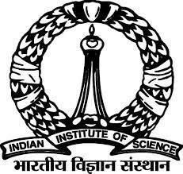

Indian Institute of Science (IISc), Bengaluru
Associate Research Fellow
September 2025 – February 2026
Ph.D. Candidate
August 2019 – September 2025
Computational thermomechanics, nonlinear thermoelasticity, non-Fourier heat conduction and multiphysics finite element formulations, with Prof. Debasish Roy.